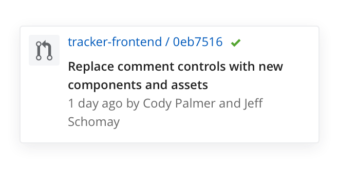

Pivotal Tracker is an agile product management tool that helps small cross-functional teams stay on top of their work and deliver more frequently and consistently.
We have been working on a new way to surface developer code within Tracker. We have a current GitHub integration that is managed through service hooks on the GitHub side and allows users to push commits to any Tracker story as long as they include the story ID in the commit title. We were realizing though that this wasn’t meeting customer needs.
We were getting a lot of feedback from users that they needed better insight into the status of their code for any given feature. We were hearing it from our customers and we were feeling the pain ourselves.
To uncover what our customers needed from a GitHub integration, one of the product managers and I started talking to them. We wanted to know how developers were working inside of Tracker and how we could improve the code-to-story experience.
We found that a lot of users that weren't using the current GitHub integration didn't actually know it existed, and the ones that were using it didn't get much value out of just seeing commits. Commits can be frequent and have the potential to clutter up an already long activity stream.
We also learned that it wasn't just developers that cared about what state the code was in. Testers, PMs, and anyone else responsible for a story's delivery and acceptance, wanted to know when checks for a branch or PR passed. This was a signal that the story was ready for the next step.
I started to get familiar with GitHub, GitLab, and BitBucket to get an understanding of how the platforms compared. Our focus was GitHub to start, but we would want to eventually scale to support other code managment platforms.
Once I had this information, I started putting ideas on paper. I sketched out several ideas and shared them with the team. Next, I started to create concepts in Sketch. I explored concepts around introducing pull requests and branches and surfacing the status of build checks for each. I worked closely with the developers throughout the process to get feedback from a technical perspective.
One thing I wasn't sure about was whether these new code bricks should remain in the story activity alongside commits or if they should be elevated. As a team, we decided to try an experiment. We had actually built a script to automate the code-story-relationship for our own team. It worked by identifying pull request links in the story description field. From that, we came up with the idea to generate a code brick for any PR or branch link added to a story's description. We used this as a way to test out elevating the code into its own section and to learn what information we should show for PRs and branches.

Next, we put the feature behind a flag so that we could turn it on in isolation for testing. Overall, the response was positive. Users were noticing the blocks pretty quickly and were able to understand the information displayed. Since the feedback was widely positive, we continued making improvements.
I worked with the development team to make the code blocks more flexible. We removed the functionality of automatically creating code blocks when a GitHub link was present in the description. Instead, users could either manually attach a link or include the story ID in a PR or branch name to push the code to Tracker.
I used Sketch to mock up flows and touchpoints for attaching the code. I also needed to think about authentication and how that affected what the user could see. Tracker had just started working with larger enterprise customers, so we needed to be thoughtful about permissions. For this, I also worked with the test and support team to make sure I wasn't missing anything.
Throughout this process I used Wake to share out my in progress work with the rest of the design team to get additional feedback and perspective.
I used InVision to share higher fidelity mocks with users and the team as well.
As we were adding the feature into the app we noticed a lot of inconsistencies in styles and patterns. I did create a system for cards that we used for all attachment types. It would have been nice to have more time to dig into the consistency of styles and patterns further but we did at least start identifying where some of the weaknesses are so that we can continue to tackle these things.
I learned a lot about how teams work. Each team has their own way of working between GitHub and Pivotal Tracker. There are a lot of nuances to account for from an authentication and permissions stand-point as well. Having some of that ambiguity made it a really fun problem to dig into and solve.